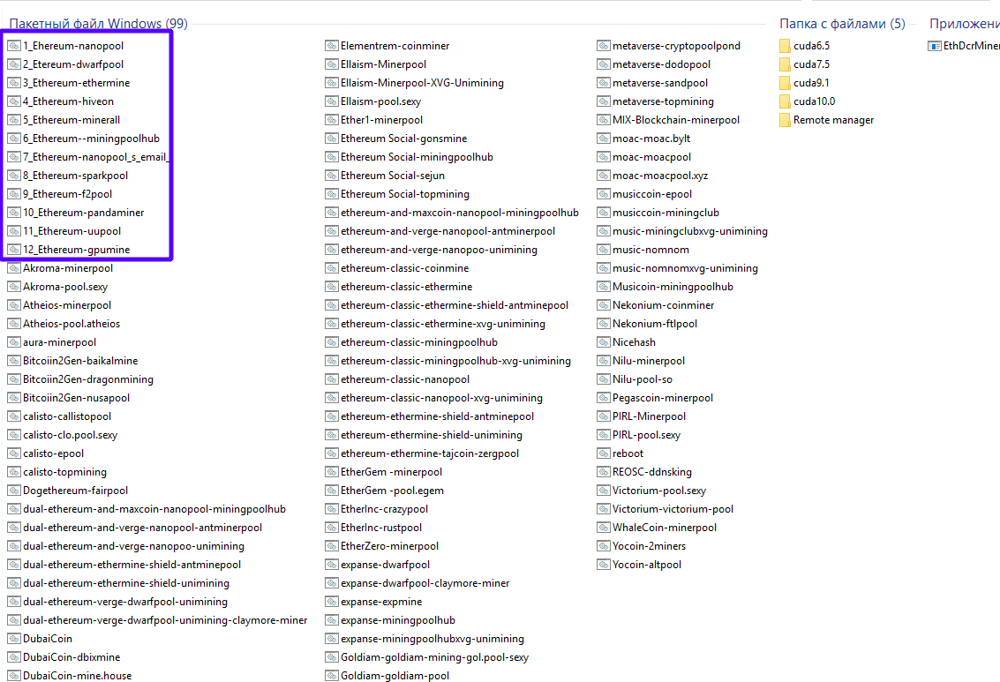

Самый быстрый Ethereum/Ethash майнер с самой низкой комиссией
Загрузите текущую версию по ссылкам для скачивания в Github или Mega (не используйте ссылки других людей). Текущая версия на момент написания этой статьи - 12.0.
Обратите внимание, что при загрузке Claymore Miner Windows может выдать предупреждение, но если вы воспользовались ссылкой для скачивания Claymore, вы можете проигнорировать это.
После загрузки извлеките папку на рабочий стол для быстрого доступа.
Некоторые настройки должны быть изменены в Windows, чтобы подготовиться к майнингу:
Следующим шагом является настройка пула, так как соло майнинг в 2019 году практически не возможен (только если у вас не ангар с видеокартами).
Первым шагом будет выбор пула майнинга Ethereum. Есть из чего выбирать, но мы рекомендуем Nanopool, Dwarfpool или Ethermine. Домашняя страница или раздел справки сайта-пула, скорее всего, содержит инструкции о том, как майнить с помощью популярного майнера Claymore.
Для целей данного руководства мы будем использовать Etheremine. Непосредственно на домашней странице Ethermine.org вы увидите раздел «Режим Stratum с использованием Claymores Miner». Откройте папку Claymore miner на рабочем столе, щелкните правой кнопкой мыши текстовый файл «Пуск» и выберите «Редактировать».
Перейдите на сайт Ethermine, выделите и скопируйте весь текст.
В зависимости от вашего местоположения вы хотите подключиться к ближайшему к вам серверу и обновить текстовую строку для сервера:
eu1.ethermine.org:4444
Для выбора наиболее подходящего для вас сервера в зависимости от вашего местоположения используйте:
Северная Америка (Восток): us1.ethermine.org:4444 или us1.ethermine.org:14444 Северная Америка (Запад): us2.ethermine.org:4444 или us2.ethermine.org:14444 Европа (Франция): eu1.ethermine.org:4444 или eu1.ethermine.org:14444 Европа (Германия): eu2.ethermine.org:4444 или eu2.ethermine.org:14444 Азия: asia1.ethermine.org:4444 или asia1.ethermine.org:14444
В этом примере я установил пул для Восточного побережья США, так что теперь внутри вашего текстового файла вы должны иметь:
setx GPU_FORCE_64BIT_PTR 0
setx GPU_MAX_HEAP_SIZE 100
setx GPU_USE_SYNC_OBJECTS 1
setx GPU_MAX_ALLOC_PERCENT 100
setx GPU_SINGLE_ALLOC_PERCENT 100
EthDcrMiner64.exe -epool us1.ethermine.org:4444 -ewal Your_Ethereum_Address.RigName -epsw xsetx GPU_FORCE_64BIT_PTR 0
setx GPU_MAX_HEAP_SIZE 100
setx GPU_USE_SYNC_OBJECTS 1
setx GPU_MAX_ALLOC_PERCENT 100
setx GPU_SINGLE_ALLOC_PERCENT 100
EthDcrMiner64.exe -epool us1.ethermine.org:4444 -wal 0x9147460980c93629e775783148591b7d0a0cbf2d.MiningRig1 -epsw xСоблюдайте синтаксическую структуру файла. Не допускаются лишние символы, пробелы, переосы строк там, где их не должно быть.
Сохраните ваш файл как пакетный файл с расширением bat. Для этого выберите «Файл» - «Сохранить как», а затем в поле выберите его имя и введите «.bat» после имени. В поле «Тип файла» выберите «Все файлы» и нажмите «Сохранить».
Поздравляю! Теперь у вас есть готовый пакетный файл! Создайте ярлык для нового Bat файла и отправьте его на рабочий стол. Затем вы можете удалить текстовую версию файла.
Вы можете скачать программу с настроенными бат файлами под все поддерживаемые монеты и пулы от Клеймор
 Структура файлов со всеми поддерживаемыми монетами и пулами
Внимание! Не забудьте поменять кошельки на свои!
Дважды щелкните Bat файл, чтобы запустить майнер.
Майнер запустится, запустит команды setx для установки переменных среды, инициализирует каждую из ваших видеокарт, создаст DAG файл и начнет хэшировать. Дайте ему поработать около 20 секунд, а затем нажмите «s», чтобы отобразить вашу скорость хеширования.
Чтобы отслеживать свои доходы в пуле, вернитесь на сайт Ethermine.org и вставьте адрес своего кошелька в окно адреса вверху. Нажмите кнопку «Проверить статус»:
Видеокарты настолько быстрее, чем майнинг на процессоре. Он больше не приносит прибыли и не стоит его использовать. Даже видеокарты начального уровня примерно в 200 раз быстрее, чем процессоры для майнинга.
Вы можете использовать любой адрес кошелька ETH для майнинга, но некоторые биржи не разрешают майнинг или не допускают очень маленькие депозиты, поэтому дважды проверяйте сайт, если майнинг идет прямо на адрес биржи.
99,9% сайтов облачного майнинга - это схемы Понци.
Несмотря на то, что некоторые из них существуют уже давно, не было никаких сторонних проверок проданной мощности хеширования, и прибыль, как правило, очень низкая, если вы не продвигаете сильно и не заставляете других присоединяться (еще один красный флаг, связанный с Понци деятельностью). Краткий ответ - НЕ покупайте облачный майнинг Ethereum для добычи Эфира.
Мы надеемся, что вы найдете это руководство полезным! Если у вас возникнут какие-либо проблемы или у вас возникнут вопросы, пожалуйста, прокомментируйте в Issue Claymore Github, и мы постараемся помочь.
Обратите внимание, что мы в этой статье не рассматриваем более продвинутые этапы майнинга, такие как разгон и пониженное напряжение, перепрограммирование BIOS, удаленный доступ и мониторинг или Dual майнинг.
Счастливого Майнинга!
Проект Claymore представляет самые последние версии программного обеспечения (исправляет все ошибки и баги предыдущих версий)! Поэтому если у Вас старая версия, мы настоятельно советуем скачать последнюю версию Claymore's по ссылкам ниже, так как с каждым выходом новой версии добыча Эфира становится выгоднее!
Ресурсы для разработчиков